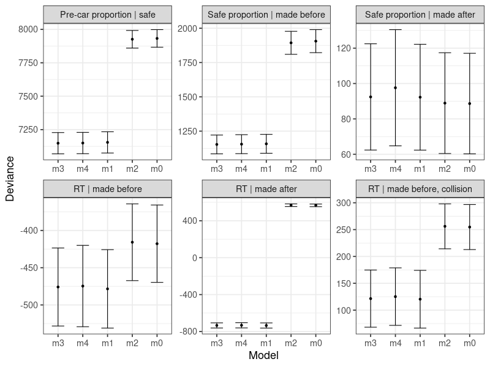

1. Multi-level Regression Models
Yi-Shin Lin1, Corresponding Author1,*
2022-11-14
1_glm.RmdMy first aim here is to test whether the left-versus-right (denoted LR, or L for short) factor has no influence, as suggested by the pilot data. We have not found a 100% identical procedure in literature testing this factor. A possible reference-able study employed participant actors to cross roads in 6 different intersections or road blocks. What they did is more similar to naturalistic observations, instead of a highly controlled laboratory-based experiment (which we did). They had not found any difference in left-versus-right preference in the variables they examined using nested logit models (Chu et al., 2004). Thus, together with our pilot data, we have no strong reason to believe that the LR factor will have a significant impact on dependent variables. To check this hypothesis, we tested it in the full data set to establish, also in our case, the LR factor has no significant impact and therefore we can safely aggregate trials across the two levels in the LR factor.
My second aim is to test the main, research factor, the time-to-arrival, denoted TTA. I assume that this factor results in a time pressure build-up and correspondingly unobservable signal suppression. Here, my aim is to establish the foundation of the theory mainly deduced from (naturalistic) observational studies [cite cite cite] that TTA exerts strong influences on various traffic decisions, including crossing roads that we tested here. That is, we seek to find a piece of casual evidence in a highly controlled laboratory setting, in contrast to correlation observations.
Our hypothesis is that decision makers engage mathematically exact mental calculation on the arrival times and the assess how much time left for him / her to walk cross a road. The calculation transcends to
To account for such a process of signal suppression that we tested in
a, potentially, multi-phase decision process in a road-crossing task, in
psychological literature, we found two candidate cognitive theories /
models. First is to link two or multiple processes of evidence
accumulation [cite]. The multi-process model were tested in
target-switching tasks with two choices. These tasks change their
imperative stimuli to match an alternative target mid-trial, so the
models, notably the piece-wise, drift-diffusion and linear
accumulator, assume a first-stage process of evidence accumulation
switches direction, like the change of imperative stimulus, to match the
alternative choice. We call this theory, process changes. In this case,
the unobservable signal might look like suppression because the model
were designed around 2AFC task, but it is a result of accumulated
evidence going from an initial direction to the alternative.
Second is the stop-signal model, which assume, in a two-alternative situation, a competing accumulator racing to stop an initiated accumulator; hence, a seemingly inhibition process is observed. We will use an ABC-based method (Turner and Sederberg, 2014; Lin et al., 2019) to test these alternatives and compare them against the UM model in a next document that analyses plausible cognitive process models. We will further test the assumption of unobservable pressure of signal suppression, by examining the P3 ERP component, which also recently been denoted as CPP and suggested to have a causal connection between evidence accumulation and initiation of a decision.
No matter which process models may account for the current data best, we assume TTA must influence all dependent variables, because this is what frequently observed in many naturalistic studies.
In addition, we further presume that participants must perceive the imperative stimulus and estimate its arrival time by assessing its speed (which is constant in the current task) and distance (which is obviously dynamic) to the crossing zone. In the stage of conducting experiment, I had excluded participants who used the strategy of always responding after the car passes by interviewing them right after they finished their practice session. Note our task instruction clearly states that, if it is possible, participants should make responses before the car passes.
An argument that some participants might still use the always-wait strategy is to argue for that our data analysis should include participants who do not follow the task instruction. This argument is not in line with the result in the following analysis, either.
A preview of the summary result is that:
- We found no compelling evidence supporting an influence due to the LR factor.
- We found strong evidence of TTA influence.
In the following, I describe details about how I derive the above two key results by employing multiple hierarchical Bayesian regression models. The reader may jump to the end of the document to skip technical details and see two figures presenting the highly condensed results.
Model-based Analysis of Manifest Responses
I used logistic regression models to separately analyse six key dependent variables:
- the proportion of responses made before the car passes given that they have not resulted in collisions,
- the proportion of responses resulting in safe crosses given that they are made before the car passes,
- the proportion of responses resulting in safe crosses given that they are made after the car passes,
- Safe response times (RTs) from those responses made before the car passes,
- Safe RTs from those responses made after the car passes, and
- Collision RTs from those made before the car passes
I did not separately analyse the collision RTs after the car passes, because in total there are only, respectively, 2, 0, 3, and 1 trials in the four TTA conditions.
pkg <- c('data.table', 'ggplot2', 'rstan', 'rethinking', 'pedxing', 'dplyr')
sapply(pkg, require, character.only = TRUE)
rm (list = ls())
wk <- ifelse(.Platform$OS.type == "windows",
shortPathName("E:/Documents/pedxing/"),
'/media/yslin/Tui/projects/pedxing/')
setwd(wk)
options(digits = 4)I loaded the pre-processed data and selected key variables. I did a few simple checks on the total number of trial to see whether it is as the design intends it to be. Specifically, it should be 256 trials, because we used (1) 2 levels in LR factor, 4 levels in TTA factor, tested 4 blocks in a participant, repeated 8 times for each of the unique set of treatment combinations.
data(ped)
cols <- c("TTA","Side","R","G","TTANme","RT","s","sold", "E")
d[,..cols]
table(d$s)
# 1 2 3 4 5 6 7 8 9 10 11 12 13 14 15 16 17 18 19
# 256 256 256 256 256 256 256 256 256 256 256 256 256 256 256 256 256 256 256
# 20 21 22 23 24 25 26 27 28 29 30 31 32 33 34 35 36
# 256 256 256 256 256 256 256 256 256 256 256 256 256 256 256 256 256
## ditto; should be all 64
d[, .N, .(E, TTA, s)]
## should be 64
unique(d[, .N, .(E, TTA, s)]$N)Then I checked the number of collision response in each condition. This depends on participants and conditions.
dhit <- d[R=="hit"] %>% count(TTA, G, .drop = FALSE);
tibble::as_tibble(dhit)
# TTA G n
# 1: 2.5 after 2
# 2: 2.5 before 752
# 3: 3.0 after 0
# 4: 3.0 before 213
# 5: 3.5 after 3
# 6: 3.5 before 17
# 7: 4.0 after 1
# 8: 4.0 before 6
prohit <- d[R == "hit", .(count = .N,
MRT = 1000*mean(RT)), .(TTA, Side, G, s)]
prohit[TTA == 2.5 & G == "before"]
prohit[, total := sum(count), .(TTA, Side, s)]
prohit[, value := count/total]
setorder(prohit, TTA, G, Side, s)
tibble::as_tibble(prohit[TTA == 2.5 & G == "before"])
# A tibble: 70 × 8
# TTA Side G s count MRT total value
# <dbl> <fct> <fct> <int> <int> <dbl> <int> <dbl>
# 1 2.5 left before 1 8 591. 8 1
# 2 2.5 left before 2 18 556. 18 1
# 3 2.5 left before 3 7 793. 7 1
# 4 2.5 left before 4 3 622. 3 1
# ...
# … with 60 more rowsResponse Proportion
The proportion of responses made before the car passes, especially at the 3-s TTA, is indicative of that participants mostly followed the task instruction. Specifically, we recorded only three safe responses in the condition of 2.5-s TTA over 9216 trials. Within these three responses, two show fast response times, that we can safely consider them as anticipated responses. This speaks to the effectiveness of adding the small random time variation [sampled from a \(U(-0.1, 0.1)\)] to the TTA. The other one, namely 821.9 ms, falls on the upper 10% percentile of the collision responses in the 2.5-TTA condition. Therefore
So far, I found no clear explanation for this safe response, because
correctWe Thus, any models optimising around, at least,
this dataset, will generate nearly pure model predictions, which reflect
only model assumptions for the safe responses at the 2.5 TTA
condition.
pro <- d[R == "safe", .(count = .N,
MRT = mean(RT)), .(TTA, Side, G, s)]
names(d)
cols <- c("Jitter", "RT", "G", "Side", "TTA")
d[TTA == 2.5 & G == "before" & R == "safe", ..cols]
# Jitter RT G Side TTA
# 1: 0.08506 0.8219 before left 2.5
# 2: 0.01145 0.1370 before right 2.5
# 3: 0.01056 0.0400 before left 2.5
quantile( d[TTA == 2.5 & G == "before" & R == "hit", ..cols]$RT,
probs = seq(0, 1, .05))[15:20]
# 70% 75% 80% 85% 90% 95% 100%
# 0.6574 0.6800 0.7168 0.7580 0.8029 0.8984 2.3650
#
pro[TTA == 2.5 & G == "before"]
# TTA Side G s count MRT
# 1: 2.5 left before 13 1 821.9
# 2: 2.5 left before 18 1 40.0
# 3: 2.5 right before 14 1 137.0I then prepare the data to the format that is suitable to RStan.
ns <- length(unique(d$s)); ns
pro <- d[R == "safe", .(count = .N), .(TTAint, TTANme, side, G, s)]
pro[TTAint == 0 & G == "before"]
pro[, total := sum(count), .(TTAint, side, s)]
pro[, value := count/total]
dp_be <- pro[G == "before"] ## pre-car percentage
dp_af <- pro[G == "after"]
pro <- d[G == "before", .(count = .N), .(TTAint, TTANme, side, R, s)]
pro[, total := sum(count), .(TTAint, side, s)]
pro[, value := count/total]
dsafe_be <- pro[R == "safe"]
## replace with data.frame(dsafe_af) to get safe proportion | after the car
pro <- d[G == "after", .(count = .N), .(TTAint, TTANme, side, R, s)]
pro[, total := sum(count), .(TTAint, side, s)]
pro[, value := count/total]
dsafe_af <- pro[R == "safe"]The following lists multiple logistic regression models. One should be able to replicate these modelling by replacing the data by for instance changing data.frame(dp_be) to data.frame(dp_af).
I use a population-level Gaussian distribution of \(location = 0\), \(scale =10\), for the intercept parameter, which is to model random-effect individual factor and another Gaussian, same parameter values, for the slope parameter. Depending on the models, there are one to three slope hyper-parameters.
m0 <- map2stan(
alist (
count ~ dbinom(total, p),
logit(p) <- a[s],
a[s] ~ dnorm(0, 10)
),
data = data.frame(dp_be), chain = 4, iter = 3000, warmup = 1500, cores = 4)
m1 <- map2stan(
alist (
count ~ dbinom(total, p),
logit(p) <- a[s] + b1 * TTAint,
a[s] ~ dnorm(0, 10),
b1 ~ dnorm(0, 10)
),
data = data.frame(dp_be), iter = 3000, warmup = 1500, chain = 4, cores = 4)
m2 <- map2stan(
alist (
count ~ dbinom(total, p),
logit(p) <- a[s] + b2 * side,
a[s] ~ dnorm(0, 10),
b2 ~ dnorm(0, 10)
),
data = data.frame(dp_be), iter = 3000, warmup = 1500, chain = 4, cores = 4)
m3 <- map2stan(
alist (
count ~ dbinom(total, p),
logit(p) <- a[s] + b1 * TTAint + b2 * side,
a[s] ~ dnorm(0, 10),
b1 ~ dnorm(0, 10),
b2 ~ dnorm(0, 10)
),
data = data.frame(dp_be), iter = 3000, warmup = 1500, chain = 4, cores = 4)
m4 <- map2stan(
alist (
count ~ dbinom(total, p),
logit(p) <- a[s] + b1 * TTAint + b2 * side + b3 * TTAint * side,
a[s] ~ dnorm(0, 10),
b1 ~ dnorm(0, 10),
b2 ~ dnorm(0, 10),
b3 ~ dnorm(0, 10)
),
data = data.frame(dp_be), iter = 3000, warmup = 1500, chain = 4, cores = 4)
# save(m0, m1, m2, m3, m4, file = "tests/2_preprocess/data/logistic_precar.RData")
# save(m0, m1, m2, m3, m4, file = "tests/2_preprocess/data/logistic_safe_before.RData")
# save(m0, m1, m2, m3, m4, file = "tests/2_preprocess/data/logistic_safe_after.RData")Response Times
The following code is almost identical to the above. I replace the logistic regression with Gaussian (linear) regression models.
Similar to the logistic model, I also use a population-level Gaussian distribution of \(location = 0\), \(scale =10\), for the intercept parameter, which is to model random-effect individual factor and another Gaussian, same parameter values, for the slope parameter. Depending on the models, there are one to three slope hyper-parameters. I use a population-level Cauchy distribution, \(location = 0\), \(scale = 2\), to model the hyper-level variability parameters.
rt <- d[R == "safe", .(count = .N,
value = median(RT)), .(TTAint, TTANme, side, G, s)]
dbe <- rt[G == "before"]
daf <- rt[G == "after"]
rt <- d[R == "hit", .(count = .N,
value = median(RT)), .(TTAint, TTANme, side, G, s)]
dbe_hit <- rt[G == "before"]
daf_hit <- rt[G == "after"]
m0 <- map2stan(
alist(
value ~ dnorm(mu, sigma),
mu <- a[s],
a[s] ~ dnorm(amu, sigma_a),
amu ~ dnorm(0, 10),
c(sigma, sigma_a) ~ dcauchy(0, 2)
),
data = data.frame(dbe), iter = 5000, warmup = 2500, chains = 4, cores = 4)
m1 <- map2stan(
alist(
value ~ dnorm(mu, sigma),
mu <- a[s] + b1 * TTAint,
a[s] ~ dnorm(amu, sigma_a),
amu ~ dnorm(0, 10),
b1 ~ dnorm(0, 10),
c(sigma, sigma_a) ~ dcauchy(0, 2)
),
data = data.frame(dbe), iter = 5000, warmup = 2500, chains = 4, cores = 4)
m2 <- map2stan(
alist(
value ~ dnorm(mu, sigma),
mu <- a[s] + b2 * side,
a[s] ~ dnorm(amu, sigma_a),
amu ~ dnorm(0, 10),
b2 ~ dnorm(0, 10),
c(sigma, sigma_a) ~ dcauchy(0, 2)
),
data = data.frame(dbe), iter = 5000, warmup = 2500, chains = 4, cores = 4)
m3 <- map2stan(
alist (
value ~ dnorm(mu, sigma),
mu <- a[s] + b1 * TTAint + b2 * side,
a[s] ~ dnorm(amu, sigma_a),
amu ~ dnorm(0, 10),
b1 ~ dnorm(0, 10),
b2 ~ dnorm(0, 10),
c(sigma, sigma_a) ~ dcauchy(0, 2)
),
data = data.frame(dbe), iter = 5000, warmup = 2500, chains = 4, cores = 4)
m4 <- map2stan(
alist (
value ~ dnorm(mu, sigma),
mu <- a[s] + b1 * TTAint + b2 * side + b3 * TTAint * side,
a[s] ~ dnorm(amu, sigma_a),
amu ~ dnorm(0, 10),
b1 ~ dnorm(0, 10),
b2 ~ dnorm(0, 10),
b3 ~ dnorm(0, 10),
c(sigma, sigma_a) ~ dcauchy(0, 2)
),
data = data.frame(dbe), iter = 5000, warmup = 2500, chains = 4, cores = 4)
# save(m0, m1, m2, m3, m4, file = "tests/2_preprocess/data/logistic_rt_before.RData")
# save(m0, m1, m2, m3, m4, file = "tests/2_preprocess/data/logistic_rt_after.RData")
# save(m0, m1, m2, m3, m4, file = "tests/2_preprocess/data/logistic_rt_before_hit.RData")Model 0 (m0), a baseline model, assumes the only factor resulting different response proportions is individual differences, which is governed by a population distribution of \(N(0, 10)\). The draws from this population distribution is linked to the proportion parameter in the binomial distribution by a logit function.
Model 1 to Model 4 gradually add more influences from the TTA and R-L factors, as well as their interaction. Note stan fits will result in slightly difference numbers, if random seeds are not the same.
Mostly, model 1, 3 and 4 were selected by using WAIC, as similarly good models. This is indicative of that Model 0 is a less plausible model. That I am confident that it is unlikely that the only influence on dependent variables is from individual differences.
load("tests/2_preprocess/data/logistic_precar.RData")
ms0 <- compare(m0, m1, m2, m3, m4)
load("tests/2_preprocess/data/logistic_safe_before.RData")
ms1 <- compare(m0, m1, m2, m3, m4)
load("tests/2_preprocess/data/logistic_safe_after.RData")
ms2 <- compare(m0, m1, m2, m3, m4)
load("tests/2_preprocess/data/logistic_rt_before.RData")
ms3 <- compare(m0, m1, m2, m3, m4)
load("tests/2_preprocess/data/logistic_rt_after.RData")
ms4 <- compare(m0, m1, m2, m3, m4)
load("tests/2_preprocess/data/logistic_rt_before_hit.RData")
ms5 <- compare(m0, m1, m2, m3, m4)
# plot(ms5)
c(ms0, ms1, ms2, ms3, ms4, m5)
# Pre-car proportion | safe
# WAIC pWAIC dWAIC weight SE dSE
# m3 7148 38.6 0.0 0.65 79.58 NA
# m4 7150 39.8 1.4 0.33 79.76 2.21
# m1 7155 37.8 6.4 0.03 79.49 5.65
# m2 7926 37.9 777.6 0.00 65.78 54.66
# m0 7932 37.0 783.8 0.00 65.70 54.98
#
# Safe proportion | made before
# WAIC pWAIC dWAIC weight SE dSE
# m3 1153 39.2 0.0 0.69 68.60 NA
# m4 1155 40.6 2.1 0.24 69.20 1.79
# m1 1158 38.1 4.7 0.07 68.80 5.33
# m2 1894 38.6 740.8 0.00 83.72 57.64
# m0 1906 37.3 753.0 0.00 83.81 58.07
#
# Safe proportion | made after
# WAIC pWAIC dWAIC weight SE dSE
# m0 88.7 7.4 0.0 0.45 28.42 NA
# m2 88.9 8.0 0.2 0.40 28.48 0.39
# m1 92.3 8.8 3.6 0.07 29.90 2.03
# m3 92.4 9.4 3.8 0.07 30.02 2.57
# m4 97.6 11.6 8.9 0.01 32.85 7.12
#
# RT | made before
# WAIC pWAIC dWAIC weight SE dSE
# m1 -478.4 37.8 0.0 0.69 52.63 NA
# m3 -475.9 38.5 2.5 0.20 52.39 1.41
# m4 -474.7 40.6 3.8 0.11 54.61 5.30
# m0 -417.8 36.0 60.6 0.00 51.95 17.61
# m2 -415.8 36.9 62.6 0.00 51.55 17.48
#
# RT | made after
# WAIC pWAIC dWAIC weight SE dSE
# m1 -735.0 34.5 0.0 0.49 27.73 NA
# m3 -734.3 35.3 0.7 0.34 27.76 2.36
# m4 -733.0 36.4 2.1 0.17 27.94 3.71
# m0 567.4 3.2 1302.5 0.00 14.51 30.68
# m2 569.1 4.0 1304.2 0.00 14.64 30.77
# RT | made before, collision
# WAIC pWAIC dWAIC weight SE dSE
# m1 120.3 22.6 0.0 0.60 53.74 NA
# m3 121.5 23.9 1.1 0.34 53.26 1.68
# m4 125.2 25.9 4.8 0.05 53.54 3.16
# m0 254.8 14.6 134.4 0.00 41.96 26.99
# m2 256.1 15.0 135.8 0.00 41.91 26.69
# Examine stanfit object in each model object to see Rhat all around 1's.
m0@stanfitThe following code creates a data frame to plot model comparison together.
dms0 <- data.table(ms0@output)
dms1 <- data.table(ms1@output)
dms2 <- data.table(ms2@output)
dms3 <- data.table(ms3@output)
dms4 <- data.table(ms4@output)
dms5 <- data.table(ms5@output)
dms0$M <- "Pre-car proportion | safe"
dms1$M <- "Safe proportion | made before"
dms2$M <- "Safe proportion | made after"
dms3$M <- "RT | made before"
dms4$M <- "RT | made after"
dms5$M <- "RT | made before, collision"
dms0$m <- factor(rownames(ms0@output),
levels = rownames(ms0@output)[order(dms0$WAIC)])
dms1$m <- factor(rownames(ms1@output),
levels = rownames(ms1@output)[order(dms1$WAIC)])
dms2$m <- factor(rownames(ms2@output),
levels = rownames(ms2@output)[order(dms2$WAIC)])
dms3$m <- factor(rownames(ms3@output),
levels = rownames(ms3@output)[order(dms3$WAIC)])
dms4$m <- factor(rownames(ms4@output),
levels = rownames(ms4@output)[order(dms4$WAIC)])
dms5$m <- factor(rownames(ms5@output),
levels = rownames(ms5@output)[order(dms5$WAIC)])
dms <- rbind(dms0, dms1, dms2, dms3, dms4, dms5)
Models <- c("Pre-car proportion | safe", "Safe proportion | made before",
"Safe proportion | made after", "RT | made before", "RT | made after",
"RT | made before, collision")
dms$M <- factor(dms$M, levels = Models)
p <- ggplot(data = dms) +
geom_point(aes(x = m, y = WAIC)) +
geom_errorbar(aes(x = m, y = WAIC, ymin = WAIC + SE, ymax = WAIC - SE),
width = .5)+
facet_wrap(M~., scales = "free") +
xlab("Model") + ylab("Deviance") +
theme_bw(base_size = 18)
png("tests/inst/figs/10_models_v1.png", 800, 600)
p
dev.off()A graphic comparison does show qualitatively Model 1, 3, and 4 are indistinguishable and Model 0 and 2 are also indistinguishable. The significant result is that the two groups are not the same and the first group is preferred. We select Model 1 in the first group on the ground that it is the minimal, parsimonious model.
 In addition to relying on the abstract information criterion, WAIC, I further examine the fits of model preditions. The big circles show the average values (across participants). The numbers on top of these circles show the number of responses, so it is clear that how many data points in each condition the models are able to optimise against.
The small circles show responses from each participant. Model 0 and Model 1 predictions are represented in red and grey, respectively.
Three important findings can be concluded. First, the data are not consistent with the argument that participants always decided to wait and made post-car responses, if one looks at the data in the 2.5-s TTA, which has 99.7% of safe responses, all made after the car passed,
To believe in this argument, one must overlook the data in the 3-s TTA condition. Participants made a good number of responses before the car passes and there was no way for them to know whether the car will arrive at 2.5-s or 3-s in a trial, let alone that TTA was made slightly and randomly deviated from the set time. Further, trials from each TTA conditions appeared randomly. Participants must carefully evaluate the imperative stimulus; otherwise, the data should show for all four TTA conditions, that most, if not all, responses are made after the car passes.
Response proportion made before the car passes
Second, the L-R factor does not have influence on behavioural responses. This conclusion is supported by the analysis that Model1, 3, and 4 show equally good fit to the data and Model 2 is similar to the baseline model (ie Model 0).
Third, the TTA factor has a strong influence on participants’ response proportions of choosing to respond before or after the car passes as well as their ability to make safe crosses before the car passes, although it makes no difference for the proportion of safe crosses after the car passes.
Four, the TTA factor also has a strong influence on participants’ response latency. It is clear for the responses made after the car passes, but ambiguous for the responses made before the car passes, which possibly has no impact. Because the Bayesian model conventionally provides probabilistic information and our data and code are transparent for anyone to use, I wish to leave the read to decide for themselves on this matter.
The TTA factor seems to have an impact on the latency of the responses resulting in collisions. This impact, however, is not as strong as the other dependent variables, because the WAIC difference is not as big as the others. The model fit to the data does suggest that we can believe that the TTA does affect the collision RT. As this observation is practically important that may inform policy to pay attention to TTA on collision prevention. We recommend it to be considered significant. Again, the reader could decide for themselves to examine the analyses we report here or re-analyse our data.
This concludes this vignette. In the next step, I will employ four sequence-sampling models in an attempt to explain all dependent variables in one framework and compare their difference to make inferences on plausible psychological process.